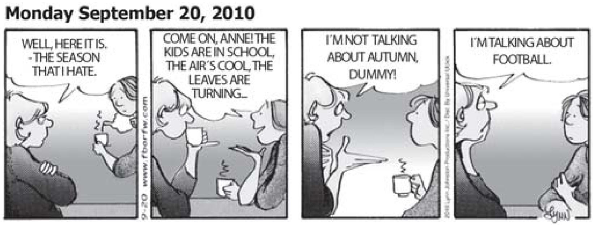
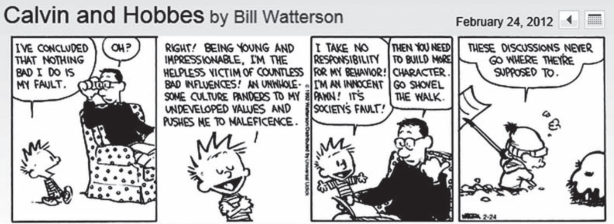

<!DOCTYPE html>
<html lang="pt-BR">
<head>
    <meta charset="UTF-8">
    <meta name="viewport" content="width=device-width, initial-scale=1, shrink-to-fit=no">

    <title>Teste de Proficiência de Leitura em Inglês como Língua Estrangeira</title>

    <link href="./vendor/bootstrap-4.0.0/dist/css/bootstrap.min.css" rel="stylesheet" type="text/css">
    <link href="./vendor/jspsych-6.0.1/css/jspsych.css" rel="stylesheet" type="text/css">
    <link href="./vendor/fontawesome-5.0.1/web-fonts-with-css/css/fontawesome-all.min.css" rel="stylesheet" type="text/css">
    <link href="./resources/css/styles.css" rel="stylesheet" type="text/css">

    <script src="./vendor/jquery-3.3.1/jquery-3.3.1.min.js"></script>
    <script src="./vendor/jquery-3.3.1/jquery-fullscreen-plugin/jquery.fullscreen-min.js"></script>
    <script src="./vendor/popper/popper.min.js"></script>
    <script src="./vendor/bootstrap-4.0.0/dist/js/bootstrap.min.js"></script>
    <script src="./vendor/jspsych-6.0.1/jspsych.js"></script>
    <script src="./vendor/jspsych-6.0.1/plugins/jspsych-instructions.js"></script>
    <script src="./vendor/jspsych-6.0.1/plugins/jspsych-survey-text.js"></script>
    <script src="./vendor/jspsych-6.0.1/plugins/jspsych-survey-multi-choice.js"></script>
</head>
<body>

</body>
<script>

    var questions = [
        [ //QUESTÃO 1
            "<p class='text-center'><strong>Italian university switches to English</strong></p>" +
            "<p class='text-center'><em>By Sean Coughlan, BBC News education correspondent<br>" +
            "16 May 2012 Last updated at 09:49 GMT</em></p>" +
            "<p>Milan is crowded with Italian icons, which makes it even more of a cultural earthquake that one of Italy’s leading universities — the Politecnico di Milano — is going to switch to the English language. The university has announced that from 2014 most of its degree courses — including all its graduate courses — will be taught and assessed entirely in English rather than Italian.</p>" +
            "<p>The waters of globalisation are rising around higher education — and the university believes that if it remains Italian-speaking it risks isolation and will be unable to compete as an international institution. “We strongly believe our classes should be international classes — and the only way to have international classes is to use the English language”, says the univertsity’s rector, Giovanni Azzone.</p>" +
            "<p class='text-right'><small>COUGHLAN, S. Dsponível em www.bbc.co.uk. Acesso em: 31 jul. 2012.</small></p>" +
            "<p>As línguas têm um papel importante na comunicação entre pessoas de diferentes culturas. Diante do movimento de internacionalização no ensino superior, a universidade Politecnico di Milano decidiu</p>",
            [
                ' elaborar exames em língua inglesa para o ingresso na universidade.',
                ' ampliar a oferta de vagas na graduação para alunos estrangeiros. ',
                ' investir na divulgação da universidade no mercado internacional.',
                ' substituir a língua nacional para se inserir no contexto da globalização.',
                ' estabelecer metas para melhorar a qualidade do ensino de italiano.'
            ]
        ], [ //QUESTÃO 2
            "<p class='text-center'><strong>Ebony and ivory</strong></p>" +
            "<p>Ebony and ivory live together in perfect harmony<br>" +
            "Side by side on my piano keyboard, oh Lord, why don’t we?<br>" +
            "We all know that people are the same wherever we go<br>" +
            "There is good and bad in ev’ryone,<br>" +
            "We learn to live, we learn to give<br>" +
            "Each other what we need to survive together alive</p>" +
            "<p class='text-right'><small>McCARTNEY, P. Disponível em: www.paulmccartney.com. Acesso em: 30 maio 2016.</small></p>" +
            "<p>Em diferentes épocas e lugares, compositores têm utilizado seu espaço de produção musical para expressar e problematizar perspectivas de mundo. Paul McCartney, na letra dessa canção, defende</p>",
            [
                ' o aprendizado compartilhado.',
                ' a necessidade de donativos. ',
                ' as manifestações culturais.',
                ' o bem em relação ao mal.',
                ' o respeito étnico.'
            ]
        ], [ //QUESTÃO 3
            "<p class='text-center'><strong>Frankentissue: printable cell technology</strong></p>" +
            "<p>In November, researchers from the University of Wollongong in Australia announced a new bio-ink that is a step toward really printing living human tissue on an inkjet printer. It is like printing tissue dot-by-dot. A drop of bioink contains 10,000 to 30,000 cells. The focus of much of this research is the eventual production of tailored tissues suitable for surgery, like living Band-Aids, which could be printed on the inkjet.</p>" +
            "<p>However, it is still nearly impossible to effectively replicate nature’s ingeniuos patters on a home office accessory. Consider that the liver is a series of globules, the kidney a set of pyramids. Those kinds of structures demand 3D printers that can build them up, layer by layer. At the moment, skin and other flat tissues are most promising for the inkjet.</p>" +
            "<p class='text-right'><small>Disponível em: http://discovermagazine.com. Acesso em: 2 dez. 2012.</small></p>" +
            "<p>O texto relata perspectivas no campo da tecnologia para cirurgias em geral, e a mais promissora para este momento enfoca o(a)</p>",
            [
                ' uso de um produto natural com milhares de células para reparar tecidos humanos.',
                ' criação de uma impressora especial para traçar mapas cirúrgicos detalhados. ',
                ' desenvolvimento de uma tinta para produzir pele e tecidos humanos finos.',
                ' reprodução de células em 3D para ajudar nas cirurgias de recuperação dos rins.',
                ' extração de glóbulos do fígado para serem reproduzidos em laboratório.'
            ]
        ], [ //QUESTÃO 4
            "<p class='text-center'><strong>Masters of War</strong></p>" +
            "<p>Come you masters of war<br>" +
            "You that build all the guns<br>" +
            "You that build the death planes<br>" +
            "You that build all the bombs<br>" +
            "You that hide behind walls<br>" +
            "You that hide behind desks<br>" +
            "I just want you to know<br>" +
            "I can see through your masks. </p>" +

            "<p>You that never done nothin’<br>" +
            "But build to destroy<br>" +
            "You play with my world<br>" +
            "Like it’s your little toy<br>" +
            "You put a gun in my hand<br>" +
            "And you hide from my eyes<br>" +
            "And you turn and run farther<br>" +
            "When the fast bullets fly.</p>" +

            "<p>Like Judas of old<br>" +
            "You lie and deceive<br>" +
            "A world war can be won<br>" +
            "You want me to believe<br>" +
            "But I see through your eyes<br>" +
            "And I see through your brain<br>" +
            "Like I see through the water<br>" +
            "That runs down my drain.</p>" +
            "<p class='text-right'><small>BOB DYLAN. The Freewheelin’ Bob Dylan. Nova York: Columbia Records, 1963 (fragmento).</small></p>" +
            "<p>Na letra da canção Masters of War, há questionamentos e reflexões que aparecem na forma de protesto contra</p>",
            [
                ' o envio de jovens à guerra para promover a expansão territorial dos Estados Unidos.',
                ' o comportamento dos soldados norte-americanos nas guerras de que participaram.',
                ' o sistema que recruta soldados para guerras motivadas por interesses econômicos.',
                ' o desinteresse do governo pelas famílias dos soldados mortos em campos de batalha.',
                ' as Forças Armadas norte-americanas, que enviavam homens despreparados para as guerras.'
            ]
        ], [ //QUESTÃO 5
            "<p class='text-center'><strong>The Road Not Taken (by Robert Frost)</strong></p>" +
            "<p>Two roads diverged in a wood, and I —<br>" +
            "I took the one less traveled by,<br>" +
            "And that has made all the difference.</p>" +
            "<p class='text-right'><small>Disponível em: www.poetryfoundation.org. Acesso em: 29 nov. 2011 (fragmento).</small></p>" +
            "<p>Esses são os versos finais do famoso poema The Road Not Taken, do poeta americano Robert Frost. Levando-se em consideração que a vida é comumente metaforizada como uma viagem, esses versos indicam que o autor</p>",
            [
                ' festeja o fato de ter sido ousado na escolha que fez em sua vida.',
                ' lamenta por ter sido um viajante que encontrou muitas bifurcações.',
                ' viaja muito pouco e que essa escolha fez toda a diferença em sua vida.',
                ' reconhece que as dificuldades em sua vida foram todas superadas.',
                ' percorre várias estradas durante as diferentes fases de sua vida.'
            ]
        ], [ //QUESTÃO 6
            "<p class='text-center'></p>" +
            "<p class='text-right'><small>Transportation Security Administration. Disponível em: www.tsa.gov. Acesso em: 13 jan. 2010 (adaptado).</small></p>" +
            "<p>As instituições públicas fazem uso de avisos como instrumento de comunicação com o cidadão. Esse aviso, voltado a passageiros, tem o objetivo de</p>",
            [
                ' solicitar que as malas sejam apresentadas para inspeção.',
                ' notificar o passageiro pelo transporte de produtos proibidos.',
                ' informar que a mala foi revistada pelos oficiais de segurança.',
                ' dar instruções de como arrumar malas de forma a evitar inspeções.',
                ' apresentar desculpas pelo dano causado à mala durante a viagem.'
            ]
        ], [ //QUESTÃO 7
            "<p class='text-center'>My brother the star, my mother the earth<br>" +
            "my father the sun, my sister the moon,<br>" +
            "to my life give beauty, to my<br>" +
            "body give strength, to my corn give<br>" +
            "goodness, to my house give peace, to<br>" +
            "my spirit give truth, to my elders give<br>" +
            "wisdom.</p>" +
            "<p class='text-right'><small>Disponível em: www.blackhawkproductions.com. Acesso em: 8 ago. 2012.</small></p>" +
            "<p>Produções artístico-culturais revelam visões de mundo próprias de um grupo social. Esse poema demonstra a estreita relação entre a tradição oral da cultura indígena norte-americana e a</p>",
            [
                ' transmissão de hábitos alimentares entre gerações.',
                ' dependência da sabedoria de seus ancestrais.',
                ' representação do corpo em seus rituais.',
                ' importância dos elementos da natureza.',
                ' preservação da estrutura familiar.'
            ]
        ], [ //QUESTÃO 8
            "<p class='text-center'></p>" +
            "<p class='text-right'><small>RIDGWAY, L. Disponível em: http://fborfw.com. Acesso em: 23 fev. 2012.</small></p>" +
            "<p>Na tira da série <em>For better or for worse</em>, a comunicação entre as personagens fica comprometida em um determinado momento porque</p>",
            [
                ' as duas amigas divergem de opinião sobre futebol.',
                ' uma das amigas desconsidera as preferências da outra.',
                ' uma das amigas ignora que o outono é temporada de futebol.',
                ' uma das amigas desconhece a razão pela qual a outra a maltrata.',
                ' as duas amigas atribuem sentidos diferentes à palavra <i>season</i>.'
            ]
        ], [ //QUESTÃO 9
            "<p class='text-center'></p>" +
            "<p class='text-right'><small>Disponível em: www.gocomics.com. Acesso em: 26 fev. 2012.</small></p>" +
            "<p>A partir da leitura dessa tirinha, infere-se que o discurso de Calvin teve um efeito diferente do pretendido, uma vez que ele</p>",
            [
                ' decide tirar a neve do quintal para convencer seu pai sobre seu discurso.',
                ' culpa o pai por exercer influência negativa na formação de sua personalidade.',
                ' comenta que suas discussões com o pai não correspondem às suas expectativas.',
                ' conclui que os acontecimentos ruins não fazem falta para a sociedade.',
                ' reclama que é vítima de valores que o levam a atitudes inadequadas.'
            ]
        ], [ //QUESTÃO 10
            "<p class='text-center'><strong>UN warns on overcrowding</strong></p>" +
            "<p>15 February 2012</p>" +
            "<p>A United Nations human rights offcial today called on Latin American countries to tackle the problem of prison overcrowding in the wake of an overnight fire at a jail in Honduras that killed hundreds of inmates. More than 300 prisoners are reported to have died in the blaze at the prison, located north of the capital, Tegucigalpa, with dozens of others still missing and presumed dead. Antonio Maldonado, human rights adviser for the UN system in Honduras, told UN Radio today that overcrowding may have contributed to the death toll. “But we have to wait until a thorough investigation is conducted so we can reach a precise cause,” he said. “But of course there is a problem of overcrowding in the prison system, not only in this country, but also in many other prisons in Latin America.”</p>" +
            "<p class='text-right'><small>Disponível em: www.un.org. Acesso em: 22 fev. 2012 (adaptado).</small></p>" +
            "<p>Os noticiários destacam acontecimentos diários, que são veiculados em jornal impresso, rádio, televisão e internet. Nesse texto, o acontecimento reportado é a</p>",
            [
                ' ocorrência de um incêndio em um presídio superlotado em Honduras.',
                ' questão da superlotação nos presídios em Honduras e na América Latina.',
                ' investigação da morte de um oficial das Nações Unidas em visita a um presídio.',
                ' conclusão do relatório sobre a morte de mais de trezentos detentos em Honduras.',
                ' causa da morte de doze detentos em um presídio superlotado ao norte de Honduras.'
            ]
        ]
    ]

    var trials = [{
        type: 'survey-text',
        questions: [
            {prompt: "<h2>Teste de Proficiência de Leitura em Inglês como Língua Estrangeira - ENEM</h2><p>Antes de começar, por favor, digite seu nome completo:</p>", value: "", rows: 1, columns: 40}
        ],
        button_label: 'continuar',
        on_finish: function () {
            $(document).fullScreen(true);
        }
    },{
        type: 'instructions',
        pages: [
            '<h2>Teste de Proficiência de Leitura em Inglês como Língua Estrangeira - ENEM</h2>' +
            '<p>Nesse teste, você deverá responder dez questões de língua inglesa retiradas de diferentes provas do ENEM. ' +
            'Se tiver alguma dúvida, favor perguntar ao/à pesquisador(a). ' +
            'Para começar o teste, basta clicar em continuar.</p>'
        ],
        show_clickable_nav: true,
        button_label_previous: 'voltar',
        button_label_next: 'continuar'
    }];

    var questionsArray = [];

    for (var i = 0; i < 10; i++) {
        questionsArray[i] = {
            prompt: "<p><b>QUESTÃO " + (i + 1) + "</b></p>" + questions[i][0],
            options: questions[i][1],
            required: false
        }
    }

    trials.push({
        type: 'survey-multi-choice',
        questions: questionsArray,
        button_label: 'concluir'
    });

    jsPsych.init({
        timeline: trials,
        on_finish: function () {
            jQuery.post('./resources/php/save_data.php', {type: "enemrpt", data: jsPsych.data.get().csv()}, function (response) {
                $(document).fullScreen(false);
                window.location = "./";
            }).fail(function () {
                $("#jspsych-content").html('<a href="data:application/octet-stream,' + encodeURIComponent(jsPsych.data.get().csv()) + '" download="dados_' + Date.now() + '.csv">Baixar resultados</a>');
            });
        }
    });

</script>
</html>
